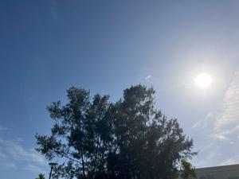
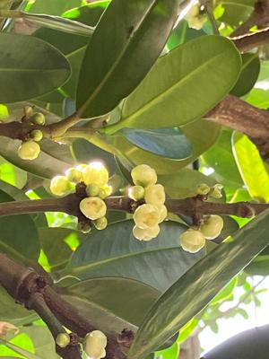

うるがいの話 ある日
最新: 雇用保険離職手続き完了【うるがいの話 ある日】とは 一日だけのプログです
『うるがいの話』の最新一日だけのプログで、通信料が少なく経済的だ。カニの画像をクリックすると全ての日付が載る『うるがいの話』サイトを表示します
|
|
【うるがいの話】 うるがい(ｳﾙｶﾞｲ urugai)とは、『もずくがに』の名前でとても大きくなります。 |
|---|---|
|
|
【カミマヤーの話】 猫のことを方言でマヤーといいます。カミマヤー（kamimayaa）とは、神の猫のことです。 |
|
【たながぁの音楽】 たながぁ（ﾀﾅｶﾞｰ tanagaa）とは手長えびのことで、何種類かあり大きいのは車 エビぐらいになります。 |

|
【ぶながぁの話】 ぶながぁ(ﾌﾞﾅｶﾞｰ bunagaa)とは、赤い髪の毛、赤い身体、そして身長は１ｍ２０ｃｍ ぐらい、川の蟹を食べているの目撃された。場所は沖縄県国頭郡大宜味村のと ある村僕の隣近所に住んでいる爺さんから、聞いた話です。 |
|
|
【ギーマの話】 ギーマ(giima)とは、山原の里山に咲くスズランに似た、 花を付けます。実は食べられます、 気が付くと口の周りが紫になっています。 |
2024年05月10日 (金）雇用保険離職手続き完了
15:35

レターパックライトで、『退職に関する書類の送付』で１．雇用保険被保険
者離職票・資格喪失通知書、２．雇用保険被保険者離職票－２ が届いた。
賃金支払い基礎日数は１１日となり、賃金額も記載されている。ホー、全然
ワクワクしなかったが、いい経験ができたと思う。昨日、とある会社が６５
歳以上再雇用拡大とニュースになったが、フル勤務は大変だろうと思う。働
くことが、好きな人はいいかも。マ、現実的にはフル勤務は７０歳が限界か
な。７０歳を越えると男性は、認知症が・・・。うるがいは、パートで７０
歳を越えても仕事出来たらと考えている。恐らく、暇に耐えられないと。

本土高校生だろうか、修学旅行のバスをよく見かける。この前、信号待ちを
している３号車の窓から、女子学生が、大きく両手を振っている。ン、誰？
と周りを見渡すが、誰もいない。ジョギングしているとても遅い初老の老人
にふざけて手を振っているようだ、羞恥心がないので笑顔で答える。
１５時２９分 ビットコインの総資産 ￥２８、３８８（↑３８９）